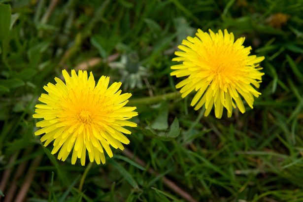

Dandelion Fritters

Description
I got this recipe from a friend I've had since middle school. My son and I love this treat in spring.
Dandelions are everywhere humans are. But often so is roundup. It's generally recommended you forage dandelion blossoms from unsprayed plants.
Ingredients
- Dandelion blossoms (a handful)
- 1 cup flour
- 1 cup milk
- 1 egg
- Seasoning (I like gunpowder spice and salt)
- Olive oil
Steps
- Season the flour to your taste.
- Whisk the egg and milk into the seasoned flour.
- Batter the blossoms.
- Fry the battered blossoms in olive oil, putting them in blossom-side down first, then turning and flattening once the first side is brown.
- Remove and drain on a paper towel.
Return to the Main Page